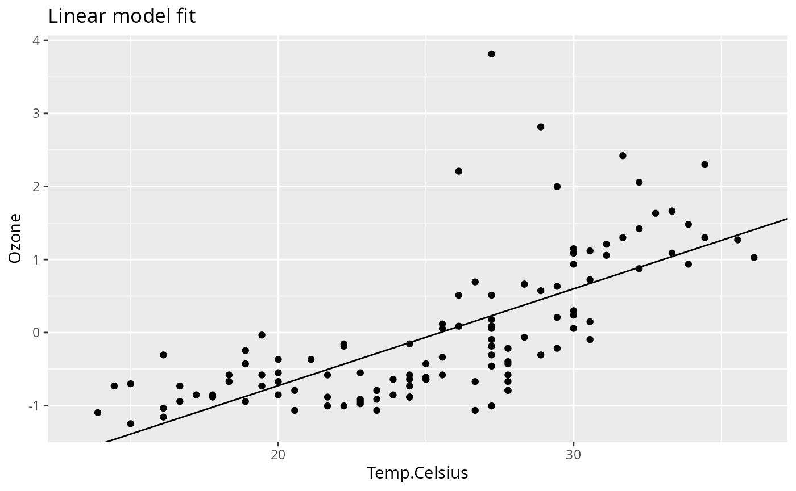

The possibility to combine pipelines basically allows to modularize the pipeline creation process. This is especially useful when you have a set of pipelines that are used in different contexts and you want to avoid code duplication1.
Two pipelines
As a simple example, let’s define one pipeline that is used for data preprocessing and one that does the modeling.
Data preprocessing pipeline:
library(pipeflow)
pip1 <- pip_new("preprocessing") |>
pip_add(
"data",
function(data = airquality) data
) |>
pip_add(
"data_prep",
function(data = ~data) {
replace(data, "Temp.Celsius", (data[, "Temp"] - 32) * 5 / 9)
}
) |>
pip_add(
"standardize",
function(
data = ~data_prep,
yVar = "Ozone"
) {
data[, yVar] <- scale(data[, yVar])
data
}
)
pip1
# <pipeflow_pip> preprocessing (3 steps)
# --------------------------------------
# step depends out state
# 1: data [NULL] new
# 2: data_prep data [NULL] new
# 3: standardize data_prep [NULL] newModelling pipeline:
pip2 <- pip_new("modeling") |>
pip_add(
"data",
function(data = airquality) data
) |>
pip_add(
"fit",
function(
data = ~data,
xVar = "Temp",
yVar = "Ozone"
) {
lm(paste(yVar, "~", xVar), data = data)
}
) |>
pip_add(
"plot",
function(
model = ~fit,
data = ~data,
xVar = "Temp",
yVar = "Ozone",
title = "Linear model fit"
) {
require(ggplot2, quietly = TRUE)
coeffs <- coefficients(model)
ggplot(data) +
geom_point(aes(.data[[xVar]], .data[[yVar]])) +
geom_abline(intercept = coeffs[1], slope = coeffs[2]) +
labs(title = title)
}
)
pip2
# <pipeflow_pip> modeling (3 steps)
# ---------------------------------
# step depends out state
# 1: data [NULL] new
# 2: fit data [NULL] new
# 3: plot fit,data [NULL] newCombined pipeline
Next we combine the two pipelines using pip_bind().
pip <- pip_bind(pip1, pip2)
pip
# <pipeflow_pip> preprocessing-modeling (6 steps)
# -----------------------------------------------
# step depends out state
# 1: data [NULL] new
# 2: data_prep data [NULL] new
# 3: standardize data_prep [NULL] new
# 4: data2 [NULL] new
# 5: fit data2 [NULL] new
# 6: plot fit,data2 [NULL] newFirst of all, note that the data step of the second
pipeline has been renamed automatically to data2 (see line
4 in the step column), which is necessary to avoid name
clashes. Of course, the data-dependencies of the second pipeline were
automatically updated as well (see lines 5-6 in the depends
column).
Generally, when binding two pipelines, {pipeflow} ensures that the step names remain unique in the resulting combined pipeline and thereby automatically renames duplicated step names if necessary.
Now, as can be also seen from the graphical representation of the pipeline,
library(visNetwork)
do.call(visNetwork, args = pip_get_graph(pip)) |>
visHierarchicalLayout(direction = "LR")the two pipelines are not yet connected. To make actual use of the
combined pipeline, we have to use the output of the first pipeline as
input of the second pipeline, that is, we want to use the output of the
standardize step as the data parameter input in the
data2 step. To achieve this, we apply the
replace function, which was introduced in the previous
vignette modify the pipeline:
pip |> pip_replace("data2", function(data = ~standardize) data)
pip
# <pipeflow_pip> preprocessing-modeling (6 steps)
# -----------------------------------------------
# step depends out state
# 1: data [NULL] new
# 2: data_prep data [NULL] new
# 3: standardize data_prep [NULL] new
# 4: data2 standardize [NULL] new
# 5: fit data2 [NULL] outdated
# 6: plot fit,data2 [NULL] outdatedRelative indexing
Since the name of the re-routed step might not always be known2, the {pipeflow} package also provides a relative position indexing mechanism, which allows to rewrite the above command as follows:
pip |> pip_replace("data2", function(data = ~ -1) data)
pip
# <pipeflow_pip> preprocessing-modeling (6 steps)
# -----------------------------------------------
# step depends out state
# 1: data [NULL] new
# 2: data_prep data [NULL] new
# 3: standardize data_prep [NULL] new
# 4: data2 standardize [NULL] new
# 5: fit data2 [NULL] outdated
# 6: plot fit,data2 [NULL] outdatedGenerally speaking, the relative indexing mechanism allows to refer
to steps positioned above the current step. The index ~-1
can be interpreted as “go one step back”, ~-2 as “go two
steps back”, and so on.
Combined pipeline results
Let’s now run the combined pipeline and inspect the plot.
pip_run(pip)
# info [2026-06-20 19:19:54.381 UTC]: Start run of pipeflow_pip 'preprocessing-modeling'
# info [2026-06-20 19:19:54.382 UTC]: Step 1/6 data
# info [2026-06-20 19:19:54.383 UTC]: Step 2/6 data_prep
# info [2026-06-20 19:19:54.385 UTC]: Step 3/6 standardize
# info [2026-06-20 19:19:54.387 UTC]: Step 4/6 data2
# info [2026-06-20 19:19:54.388 UTC]: Step 5/6 fit
# info [2026-06-20 19:19:54.392 UTC]: Step 6/6 plot
# info [2026-06-20 19:19:55.068 UTC]: Finished run of pipeflow_pip 'preprocessing-modeling'
pip[["plot", "out"]]
# Warning: Removed 37 rows containing missing values or values outside the scale range
# (`geom_point()`).As we can see, the plot shows the linear model fit of the standardized data. We can now go ahead and for example change the x-variable of the model and rerun the pipeline.
pip_set_params(pip, params = list(xVar = "Temp.Celsius"))
pip_run(pip)
# info [2026-06-20 19:19:55.630 UTC]: Start run of pipeflow_pip 'preprocessing-modeling'
# info [2026-06-20 19:19:55.631 UTC]: Step 1/6 data - skipping done step
# info [2026-06-20 19:19:55.631 UTC]: Step 2/6 data_prep - skipping done step
# info [2026-06-20 19:19:55.631 UTC]: Step 3/6 standardize - skipping done step
# info [2026-06-20 19:19:55.631 UTC]: Step 4/6 data2 - skipping done step
# info [2026-06-20 19:19:55.631 UTC]: Step 5/6 fit
# info [2026-06-20 19:19:55.635 UTC]: Step 6/6 plot
# info [2026-06-20 19:19:55.649 UTC]: Finished run of pipeflow_pip 'preprocessing-modeling'
pip[["plot", "out"]]
# Warning: Removed 37 rows containing missing values or values outside the scale range
# (`geom_point()`).
Step cherry-picking
Another way to re-use steps from other pipelines is by
cherry-picking, which can be done via pip_add_from, for
example:
pip <- pip_new("cherry-picked-from-1-and-2") |>
pip_add_from(pip1, "data") |>
pip_add_from(pip1, "data_prep") |>
pip_add_from(pip1, "standardize") |>
pip_add_from(pip2, "fit") |>
pip_add_from(pip2, "plot")
pip
# <pipeflow_pip> cherry-picked-from-1-and-2 (5 steps)
# ---------------------------------------------------
# step depends out state
# 1: data [NULL] new
# 2: data_prep data [NULL] new
# 3: standardize data_prep [NULL] new
# 4: fit data [NULL] new
# 5: plot fit,data [NULL] newNote that here the cherry-pick approach is not all that useful,
because in contrast to the pip_bind command, which renames
data to data2, the cherry-picked
fit and plot steps still refer to the initial
data step.
In other scenarios, however, this might be exactly what you want.
Generally, when creating these pipelines, there will be a lot of
steps calculating intermediate results and only a few steps contain the
final output we are interested in (see e.g. the plot output
in the above example). To see how {pipeflow} allows to conveniently tag,
collect and possibly group those final outputs, see the next vignette Collecting and filtering output.